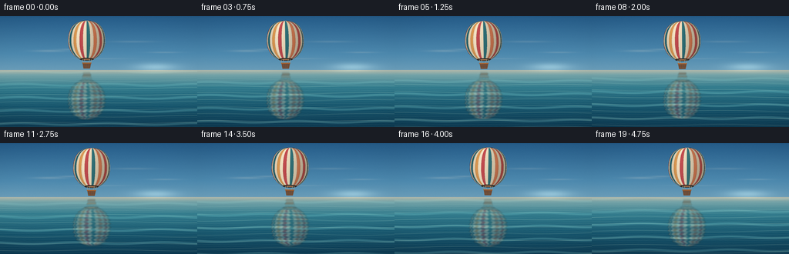
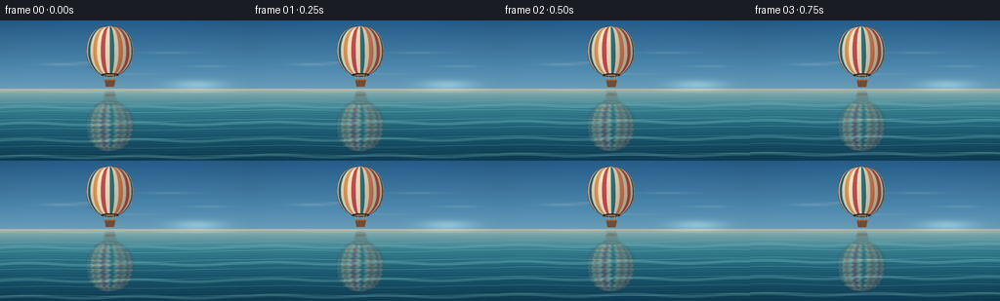

CODING AGENTS AS PIXEL WORLD MODELS
traex/DeepSeek-V4.1-Flash · phygen_060
点击播放 · 原生 RGB 像素
逐轮保存的候选
回放视频、检查图与代码变化。
每份候选均可单独播放。实际图片检查记录在下方工具轨迹中。
候选 01播放与检查图
点击播放 · 原生 RGB 像素

展开代码变化
--- 上一保存版本
+++ 本次保存版本
@@ -0,0 +1,498 @@
+"""Procedurally render a hot-air balloon reflected in a calm ocean."""
+
+from pathlib import Path
+
+import numpy as np
+from PIL import Image, ImageDraw, ImageFilter
+
+import artifact_io
+
+
+WIDTH = 256
+HEIGHT = 144
+FRAMES = 20
+FPS = 4.0
+SUPERSAMPLE = 4
+W = WIDTH * SUPERSAMPLE
+H = HEIGHT * SUPERSAMPLE
+HORIZON = 70.0
+
+
+def smoothstep(edge0, edge1, value):
+ value = np.clip((value - edge0) / (edge1 - edge0), 0.0, 1.0)
+ return value * value * (3.0 - 2.0 * value)
+
+
+def gradient_palette(y, stops):
+ positions = np.asarray([stop[0] for stop in stops], dtype=np.float32)
+ colors = np.asarray([stop[1] for stop in stops], dtype=np.float32)
+ output = np.empty(y.shape + (3,), dtype=np.float32)
+ for channel in range(3):
+ output[..., channel] = np.interp(y, positions, colors[:, channel])
+ return output
+
+
+def cubic_bezier(p0, p1, p2, p3, count=241):
+ t = np.linspace(0.0, 1.0, count, dtype=np.float32)[:, None]
+ points = (
+ (1.0 - t) ** 3 * np.asarray(p0, dtype=np.float32)
+ + 3.0 * (1.0 - t) ** 2 * t * np.asarray(p1, dtype=np.float32)
+ + 3.0 * (1.0 - t) * t**2 * np.asarray(p2, dtype=np.float32)
+ + t**3 * np.asarray(p3, dtype=np.float32)
+ )
+ return points
+
+
+UPPER_EDGE = cubic_bezier((0.0, -1.0), (0.72, -1.0), (1.0, -0.52), (1.0, 0.05))
+LOWER_EDGE = cubic_bezier((1.0, 0.05), (1.0, 0.50), (0.74, 0.84), (0.38, 1.0))
+EDGE = np.concatenate([UPPER_EDGE, LOWER_EDGE[1:]], axis=0)
+EDGE_Y = EDGE[:, 1]
+EDGE_X = EDGE[:, 0]
+
+
+def envelope_radius(y_norm):
+ return np.interp(y_norm, EDGE_Y, EDGE_X)
+
+
+def make_background(phase):
+ yy, xx = np.mgrid[0:H, 0:W].astype(np.float32)
+ y = yy / float(H - 1)
+ x = xx / float(W - 1)
+ horizon = HORIZON / HEIGHT
+
+ sky = gradient_palette(
+ y,
+ [
+ (0.00, (37, 92, 137)),
+ (0.34, (77, 137, 174)),
+ (0.66, (139, 179, 196)),
+ (0.86, (213, 202, 184)),
+ (horizon, (248, 211, 172)),
+ ],
+ )
+ ocean = gradient_palette(
+ y,
+ [
+ (horizon, (179, 185, 170)),
+ (0.53, (116, 163, 168)),
+ (0.64, (50, 124, 142)),
+ (0.82, (22, 85, 109)),
+ (1.00, (12, 58, 82)),
+ ],
+ )
+ image = np.where((y < horizon)[..., None], sky, ocean)
+
+ # A low, hazy sun warms the horizon without competing with the balloon.
+ sun_x = 202.0 / WIDTH
+ sun_y = 66.0 / HEIGHT
+ glow = np.exp(
+ -(
+ ((x - sun_x) / 0.105) ** 2
+ + ((y - sun_y) / 0.035) ** 2
+ )
+ )
+ sky_warm = np.asarray((255.0, 225.0, 176.0), dtype=np.float32)
+ image += glow[..., None] * sky_warm * 0.18
+
+ # Thin cloud wisps give the sky depth while keeping it serene.
+ cloud = np.zeros((H, W), dtype=np.float32)
+ for cx, cy, rx, ry, strength in [
+ (64, 45, 21, 1.4, 0.18),
+ (91, 43, 15, 1.0, 0.14),
+ (172, 33, 27, 1.2, 0.12),
+ (213, 47, 20, 1.0, 0.14),
+ (134, 55, 30, 0.8, 0.09),
+ ]:
+ cloud += strength * np.exp(
+ -(
+ ((xx / SUPERSAMPLE - cx) / rx) ** 2
+ + ((yy / SUPERSAMPLE - cy) / ry) ** 2
+ )
+ )
+ cloud = np.clip(cloud, 0.0, 0.32)
+ cloud *= (y < horizon).astype(np.float32)
+ cloud_color = np.asarray((255.0, 239.0, 218.0), dtype=np.float32)
+ image = image * (1.0 - cloud[..., None]) + cloud_color * cloud[..., None]
+
+ # Fine wave bands: strongest in the near water, almost still at the horizon.
+ depth = np.maximum(0.0, y - horizon)
+ wave_phase = (
+ yy / (SUPERSAMPLE * 2.0) * 5.1
+ + 0.58 * np.sin(xx / (SUPERSAMPLE * 25.0) + phase * 0.45)
+ + phase * 1.15
+ )
+ ripple = np.sin(wave_phase)
+ fine = np.sin(wave_phase * 2.15 + 1.7 * np.sin(xx / (SUPERSAMPLE * 11.0)))
+ ocean_mask = (y >= horizon).astype(np.float32)
+ depth_fade = smoothstep(0.0, 0.16, depth)
+ image += (
+ ocean_mask[..., None]
+ * depth_fade[..., None]
+ * (np.maximum(ripple, 0.0) ** 7)[..., None]
+ * np.asarray((34.0, 25.0, 17.0), dtype=np.float32)
+ * 0.62
+ )
+ image -= (
+ ocean_mask[..., None]
+ * depth_fade[..., None]
+ * (np.maximum(-fine, 0.0) ** 9)[..., None]
+ * np.asarray((9.0, 16.0, 18.0), dtype=np.float32)
+ * 0.72
+ )
+
+ # A very soft vignette keeps focus near the reflected balloon.
+ radius = np.sqrt(((x - 0.5) / 0.72) ** 2 + ((y - 0.53) / 0.75) ** 2)
+ vignette = 1.0 - 0.055 * smoothstep(0.55, 1.18, radius)
+ image *= vignette[..., None]
+ return np.clip(image, 0.0, 255.0)
+
+
+def draw_panel_polygon(draw, center_x, center_y, radius_x, radius_y, phi0, phi1, color):
+ y_values = np.linspace(-1.0, 1.0, 97)
+ radius = envelope_radius(y_values)
+ left = [
+ (
+ (center_x + radius_x * rr * np.sin(phi0)) * SUPERSAMPLE,
+ (center_y + radius_y * vv) * SUPERSAMPLE,
+ )
+ for vv, rr in zip(y_values, radius)
+ ]
+ right = [
+ (
+ (center_x + radius_x * rr * np.sin(phi1)) * SUPERSAMPLE,
+ (center_y + radius_y * vv) * SUPERSAMPLE,
+ )
+ for vv, rr in zip(y_values[::-1], radius[::-1])
+ ]
+ draw.polygon(left + right, fill=color)
+
+
+def make_balloon_sprite(t):
+ sprite_size = 100 * SUPERSAMPLE
+ center_x, center_y = 50.0, 48.0
+ radius_x, radius_y = 24.0, 25.0
+
+ gore_count = 16
+ palette = [
+ (220, 104, 88),
+ (242, 224, 192),
+ (44, 112, 126),
+ (242, 224, 192),
+ (222, 154, 84),
+ (242, 224, 192),
+ (193, 76, 79),
+ (242, 224, 192),
+ (52, 119, 126),
+ (242, 224, 192),
+ (230, 134, 91),
+ (242, 224, 192),
+ (210, 91, 84),
+ (242, 224, 192),
+ (39, 99, 119),
+ (242, 224, 192),
+ ]
+
+ gore_image = Image.new("RGB", (sprite_size, sprite_size), (0, 0, 0))
+ gore_draw = ImageDraw.Draw(gore_image)
+ phis = np.linspace(-np.pi / 2.0, np.pi / 2.0, gore_count + 1)
+ for index in range(gore_count):
+ draw_panel_polygon(
+ gore_draw,
+ center_x,
+ center_y,
+ radius_x,
+ radius_y,
+ phis[index],
+ phis[index + 1],
+ palette[index],
+ )
+
+ silhouette_points = []
+ y_values = np.linspace(-1.0, 1.0, 321)
+ radii = envelope_radius(y_values)
+ for vv, rr in zip(y_values, radii):
+ silhouette_points.append(
+ (
+ (center_x + radius_x * rr) * SUPERSAMPLE,
+ (center_y + radius_y * vv) * SUPERSAMPLE,
+ )
+ )
+ for vv, rr in zip(y_values[::-1], radii[::-1]):
+ silhouette_points.append(
+ (
+ (center_x - radius_x * rr) * SUPERSAMPLE,
+ (center_y + radius_y * vv) * SUPERSAMPLE,
+ )
+ )
+ mask_image = Image.new("L", (sprite_size, sprite_size), 0)
+ ImageDraw.Draw(mask_image).polygon(silhouette_points, fill=255)
+ mask = np.asarray(mask_image, dtype=np.float32) / 255.0
+
+ yy, xx = np.mgrid[0:sprite_size, 0:sprite_size].astype(np.float32)
+ x_units = xx / SUPERSAMPLE
+ y_units = yy / SUPERSAMPLE
+ y_norm = np.clip((y_units - center_y) / radius_y, -1.0, 1.0)
+ local_radius = np.maximum(envelope_radius(y_norm), 0.001)
+ x_norm = np.clip((x_units - center_x) / (radius_x * local_radius), -1.0, 1.0)
+ phi = np.arcsin(x_norm)
+
+ # Cylindrical shading plus a gentle top-to-bottom falloff.
+ diffuse = np.exp(-((phi + 0.52) / 0.95) ** 2)
+ edge_soft = 0.86 + 0.14 * np.sqrt(np.maximum(0.0, 1.0 - x_norm**2))
+ vertical = 0.96 + 0.06 * (1.0 - y_norm)
+ brightness = np.clip((0.70 + 0.29 * diffuse) * edge_soft * vertical, 0.54, 1.16)
+ rgb = np.asarray(gore_image, dtype=np.float32) * brightness[..., None]
+
+ # Warm rim light on the sun-facing edge.
+ rim = np.exp(-((x_norm - 0.93) / 0.055) ** 2) * (0.72 + 0.28 * (1.0 - y_norm))
+ rgb += rim[..., None] * np.asarray((35.0, 21.0, 8.0), dtype=np.float32)
+ rgb *= mask[..., None]
+
+ seam_image = Image.new("L", (sprite_size, sprite_size), 0)
+ seam_draw = ImageDraw.Draw(seam_image)
+ seam_width = max(1, int(round(0.34 * SUPERSAMPLE)))
+ for phi_edge in phis[1:-1]:
+ seam_points = [
+ (
+ (center_x + radius_x * rr * np.sin(phi_edge)) * SUPERSAMPLE,
+ (center_y + radius_y * vv) * SUPERSAMPLE,
+ )
+ for vv, rr in zip(y_values, radii)
+ ]
+ seam_draw.line(seam_points, fill=255, width=seam_width)
+ seam_alpha = (
+ np.asarray(seam_image.filter(ImageFilter.GaussianBlur(0.42 * SUPERSAMPLE)), dtype=np.float32)
+ / 255.0
+ * mask
+ * 0.34
+ )
+ seam_color = np.asarray((38.0, 54.0, 58.0), dtype=np.float32)
+ rgb = rgb * (1.0 - seam_alpha[..., None]) + seam_color * seam_alpha[..., None]
+
+ alpha = np.round(mask * 255.0).astype(np.uint8)
+ sprite = Image.fromarray(
+ np.dstack([np.clip(rgb, 0, 255).astype(np.uint8), alpha]),
+ mode="RGBA",
+ )
+ sprite_draw = ImageDraw.Draw(sprite)
+
+ # Open mouth and suspension hardware.
+ mouth_y = (center_y + radius_y) * SUPERSAMPLE
+ mouth_rx = 0.38 * radius_x * SUPERSAMPLE
+ mouth_ry = 1.75 * SUPERSAMPLE
+ sprite_draw.ellipse(
+ (
+ center_x * SUPERSAMPLE - mouth_rx,
+ mouth_y - mouth_ry,
+ center_x * SUPERSAMPLE + mouth_rx,
+ mouth_y + mouth_ry,
+ ),
+ fill=(48, 43, 39, 255),
+ )
+ sprite_draw.ellipse(
+ (
+ center_x * SUPERSAMPLE - mouth_rx * 0.55,
+ mouth_y - mouth_ry * 0.25,
+ center_x * SUPERSAMPLE + mouth_rx * 0.55,
+ mouth_y + mouth_ry * 0.70,
+ ),
+ fill=(207, 124, 62, 210),
+ )
+
+ basket_top = 78.0
+ basket_bottom = 85.0
+ rope_color = (205, 185, 148, 235)
+ rope_width = max(1, int(round(0.52 * SUPERSAMPLE)))
+ for start_x, end_x in [(44.0, 45.0), (56.0, 55.0), (46.5, 48.2), (53.5, 51.8)]:
+ sprite_draw.line(
+ [
+ (start_x * SUPERSAMPLE, mouth_y),
+ (end_x * SUPERSAMPLE, basket_top * SUPERSAMPLE),
+ ],
+ fill=rope_color,
+ width=rope_width,
+ )
+
+ basket_points = [
+ (44.5 * SUPERSAMPLE, basket_top * SUPERSAMPLE),
+ (55.5 * SUPERSAMPLE, basket_top * SUPERSAMPLE),
+ (54.2 * SUPERSAMPLE, basket_bottom * SUPERSAMPLE),
+ (45.8 * SUPERSAMPLE, basket_bottom * SUPERSAMPLE),
+ ]
+ sprite_draw.polygon(basket_points, fill=(121, 75, 47, 255))
+ sprite_draw.line(
+ [
+ (44.2 * SUPERSAMPLE, basket_top * SUPERSAMPLE),
+ (55.8 * SUPERSAMPLE, basket_top * SUPERSAMPLE),
+ ],
+ fill=(164, 103, 58, 255),
+ width=max(1, int(round(1.15 * SUPERSAMPLE))),
+ )
+ for weave_y in (80.1, 82.1, 84.0):
+ inset = 0.65 if weave_y < 83.5 else 1.1
+ sprite_draw.line(
+ [
+ ((45.0 + inset) * SUPERSAMPLE, weave_y * SUPERSAMPLE),
+ ((55.0 - inset) * SUPERSAMPLE, weave_y * SUPERSAMPLE),
+ ],
+ fill=(82, 53, 38, 190),
+ width=max(1, int(round(0.36 * SUPERSAMPLE))),
+ )
+ for weave_x in (47.5, 50.0, 52.5):
+ sprite_draw.line(
+ [
+ (weave_x * SUPERSAMPLE, 79.2 * SUPERSAMPLE),
+ ((weave_x + (50.0 - weave_x) * 0.11) * SUPERSAMPLE, 84.1 * SUPERSAMPLE),
+ ],
+ fill=(151, 95, 54, 120),
+ width=max(1, int(round(0.28 * SUPERSAMPLE))),
+ )
+
+ rotation = 1.05 * np.sin(2.0 * np.pi * t / 5.0 + 0.15)
+ rotated = sprite.rotate(
+ rotation,
+ resample=Image.Resampling.BICUBIC,
+ center=(center_x * SUPERSAMPLE, 48.0 * SUPERSAMPLE),
+ )
+ return np.asarray(rotated, dtype=np.uint8)
+
+
+def paste_sprite(canvas, sprite, top_left_x, top_left_y):
+ sx0 = max(0, -top_left_x)
+ sy0 = max(0, -top_left_y)
+ dx0 = max(0, top_left_x)
+ dy0 = max(0, top_left_y)
+ copy_w = min(sprite.shape[1] - sx0, canvas.shape[1] - dx0)
+ copy_h = min(sprite.shape[0] - sy0, canvas.shape[0] - dy0)
+ if copy_w <= 0 or copy_h <= 0:
+ return
+ src = sprite[sy0 : sy0 + copy_h, sx0 : sx0 + copy_w].astype(np.float32)
+ alpha = src[..., 3:4] / 255.0
+ destination = canvas[dy0 : dy0 + copy_h, dx0 : dx0 + copy_w]
+ destination[..., :3] = src[..., :3] * alpha + destination[..., :3] * (1.0 - alpha)
+ destination[..., 3:4] = np.maximum(destination[..., 3:4], src[..., 3:4])
+
+
+def add_reflection(background, balloon_layer, t):
+ reflection = np.zeros_like(balloon_layer)
+ horizon_px = int(round(HORIZON * SUPERSAMPLE))
+ for y in range(horizon_px + 1, H):
+ source_y = 2 * horizon_px - y
+ if 0 <= source_y < H:
+ reflection[y] = balloon_layer[source_y]
+
+ reflection_image = Image.fromarray(reflection, mode="RGBA").filter(
+ ImageFilter.GaussianBlur(0.78 * SUPERSAMPLE)
+ )
+ reflection = np.asarray(reflection_image, dtype=np.float32)
+ output = background.copy()
+ phase = 2.0 * np.pi * t / 5.0
+
+ for y in range(horizon_px + 2, H):
+ distance = (y - horizon_px) / float(max(1, H - horizon_px))
+ amplitude = SUPERSAMPLE * (0.18 + 1.15 * distance)
+ shift = amplitude * np.sin(
+ 2.0 * np.pi * (y - horizon_px) / (SUPERSAMPLE * 4.6)
+ + phase * 1.25
+ + 0.55 * np.sin((y - horizon_px) / (SUPERSAMPLE * 19.0))
+ )
+ shift = int(round(shift))
+ row = np.roll(reflection[y], shift, axis=0)
+ breakup = 0.78 + 0.22 * np.sin(
+ 2.0 * np.pi * (y - horizon_px) / (SUPERSAMPLE * 5.2) + phase * 1.1
+ )
+ alpha = row[..., 3:4] / 255.0
+ alpha *= (0.47 + 0.08 * (1.0 - distance)) * breakup
+ alpha *= smoothstep(0.0, 0.07, distance)
+ reflected_rgb = row[..., :3] * 0.72 + np.asarray((31.0, 83.0, 94.0)) * 0.28
+ reflected_rgb += np.asarray((17.0, 13.0, 6.0)) * (1.0 - distance)
+ output[y, :, :3] = (
+ reflected_rgb * alpha + output[y, :, :3] * (1.0 - alpha)
+ )
+
+ return output
+
+
+def add_foreground_water(image, t):
+ yy, xx = np.mgrid[0:H, 0:W].astype(np.float32)
+ y = yy / float(H - 1)
+ x = xx / float(W - 1)
+ horizon = HORIZON / HEIGHT
+ depth = np.maximum(0.0, y - horizon)
+ ocean = smoothstep(0.0, 0.012, depth)
+ phase = 2.0 * np.pi * t / 5.0
+ wave = np.sin(
+ yy / (SUPERSAMPLE * 2.7)
+ + 0.42 * np.sin(xx / (SUPERSAMPLE * 18.0) + phase * 0.7)
+ + phase * 1.1
+ )
+ crest = np.maximum(wave - 0.74, 0.0) / 0.26
+ crest = smoothstep(0.0, 1.0, crest)
+ crest *= ocean * (0.22 + 0.78 * smoothstep(0.0, 0.30, depth))
+ image += crest[..., None] * np.asarray((28.0, 33.0, 27.0), dtype=np.float32)
+
+ glint = np.maximum(
+ np.sin(
+ yy / (SUPERSAMPLE * 1.45)
+ + 0.72 * np.sin(xx / (SUPERSAMPLE * 32.0) + phase)
+ + phase * 1.8
+ )
+ - 0.90,
+ 0.0,
+ ) / 0.10
+ glint *= ocean * smoothstep(0.03, 0.18, depth) * 0.55
+ image += glint[..., None] * np.asarray((45.0, 38.0, 25.0), dtype=np.float32)
+ return image
+
+
+def render_frame(frame_index):
+ t = frame_index / FPS
+ phase = 2.0 * np.pi * t / 5.0
+ background = make_background(phase)
+
+ center_x = 112.5 + 2.35 * t + 0.20 * np.sin(phase - 0.4)
+ center_y = 31.0 + 0.42 * np.sin(phase - 0.7)
+ sprite = make_balloon_sprite(t)
+ balloon_layer = np.zeros((H, W, 4), dtype=np.float32)
+ top_left_x = int(round((center_x - 50.0) * SUPERSAMPLE))
+ top_left_y = int(round((center_y - 48.0) * SUPERSAMPLE))
+ paste_sprite(balloon_layer, sprite, top_left_x, top_left_y)
+
+ image = add_reflection(background, balloon_layer.astype(np.uint8), t)
+ image = add_foreground_water(image, t)
+
+ # Composite the balloon after the water so the object and reflection remain
+ # spatially separate at the horizon.
+ alpha = balloon_layer[..., 3:4] / 255.0
+ image = balloon_layer[..., :3] * alpha + image * (1.0 - alpha)
+
+ # Fine deterministic grain suppresses gradient banding at this small size.
+ rng = np.random.default_rng(20261110 + frame_index)
+ image += rng.normal(0.0, 1.15, size=(H, W, 1)).astype(np.float32)
+ image = np.clip(image, 0.0, 255.0).astype(np.uint8)
+ frame = Image.fromarray(image, mode="RGB").resize(
+ (WIDTH, HEIGHT), Image.Resampling.LANCZOS
+ )
+ return np.asarray(frame, dtype=np.uint8)
+
+
+def main():
+ case_dir = Path(__file__).resolve().parent
+ frames = np.stack([render_frame(index) for index in range(FRAMES)], axis=0)
+ artifact_io.save(frames, case_dir)
+
+ gif_frames = [
+ Image.fromarray(frame).resize((WIDTH * 2, HEIGHT * 2), Image.Resampling.NEAREST)
+ for frame in frames
+ ]
+ gif_frames[0].save(
+ case_dir / "preview.gif",
+ save_all=True,
+ append_images=gif_frames[1:],
+ duration=int(1000 / FPS),
+ loop=0,
+ )
+
+
+if __name__ == "__main__":
+ main()
候选 02播放与检查图
点击播放 · 原生 RGB 像素


展开代码变化
--- 上一保存版本
+++ 本次保存版本
@@ -481,6 +481,24 @@
frames = np.stack([render_frame(index) for index in range(FRAMES)], axis=0)
artifact_io.save(frames, case_dir)
+ import imageio_ffmpeg
+
+ video_path = case_dir / "video.mp4"
+ writer = imageio_ffmpeg.write_frames(
+ str(video_path),
+ (WIDTH, HEIGHT),
+ fps=FPS,
+ quality=8,
+ codec="libx264",
+ pix_fmt_out="yuv420p",
+ macro_block_size=1,
+ output_params=["-movflags", "+faststart"],
+ )
+ writer.send(None)
+ for frame in frames:
+ writer.send(np.ascontiguousarray(frame))
+ writer.close()
+
gif_frames = [
Image.fromarray(frame).resize((WIDTH * 2, HEIGHT * 2), Image.Resampling.NEAREST)
for frame in frames
可观测工具轨迹
实际执行的命令与返回图片。
命令 1exit 0
/bin/bash -c "pwd && rg --files -g 'prompt.txt' -g 'GENERATION_RULES.md' -g 'task_spec.json' -g '"'!*.mp4'"' -g '"'!*.mov'"'"
命令 2exit 0
/bin/bash -c 'git status --short'
命令 3exit 0
/bin/bash -c 'cat prompt.txt'
命令 4exit 0
/bin/bash -c 'cat GENERATION_RULES.md'
命令 5exit 0
/bin/bash -c 'cat task_spec.json'
命令 6exit 0
/bin/bash -c "find . -maxdepth 2 -type f -not -path './.git/*' -printf '%p %s bytes\\n' | sort"
命令 7exit 0
/bin/bash -c "sed -n '1,240p' artifact_io.py"
命令 8exit 0
/bin/bash -c "python - <<'PY' import importlib.util for m in ['numpy','PIL','scipy','cv2','imageio','matplotlib']: print(m, bool(importlib.util.find_spec(m))) PY ffmpeg -version | head -n 1"
命令 9exit 0
/bin/bash -c 'python generate.py'
命令 10exit 0
/bin/bash -c "find . -maxdepth 2 -type f -printf '%p %s bytes\\n' | sort"
命令 11exit 0
/bin/bash -c 'command -v chafa || true; command -v viu || true; command -v jp2 || true; command -v img2txt || true; command -v ffmpeg || true'
命令 12exit 0
/bin/bash -c "python - <<'PY' import imageio_ffmpeg print(imageio_ffmpeg.get_ffmpeg_exe()) PY"
命令 13exit 0
/bin/bash -c "python - <<'PY'
import numpy as np
from PIL import Image
for i in [0,5,10,15,19]:
a=np.array(Image.open(f'frames/{i:02d}.png')).astype(float)
# differences from neutral row values and stats
print(i, 'mean', a.mean((0,1)).round(1), 'std', a.std((0,1)).round(1), 'top', a[:70].mean((0,1)).round(1), 'bottom', a[70:].mean((0,1)).round(1))
PY"命令 14exit 0
/bin/bash -c "python - <<'PY'
from PIL import Image
import numpy as np
im=Image.open('frames/00.png').resize((64,36), Image.Resampling.LANCZOS)
a=np.asarray(im).astype(float)/255
hsv=np.asarray(Image.fromarray(np.asarray(im)).convert('HSV')).astype(float)/255
h,s,v=[hsv[...,i] for i in range(3)]
for y in range(36):
row=''
for x in range(64):
if (y>=17 and y<=29 and 21<=x<=35 and s[y,x]>.25): c='B'
elif y>=18: c='~'
elif s[y,x]>.28 and h[y,x]<.15 and v[y,x]>.45: c='s'
elif v[y,x]>.82: c='.'
elif v[y,x]>.67: c=' '
elif v[y,x]>.48: c='-'
else: c='+'
row+=c
print(row)
PY"命令 15exit 0
/bin/bash -c "python - <<'PY'
import cv2, numpy as np
from PIL import Image
for idx in [0,5,10,15,19]:
a=np.array(Image.open(f'frames/{idx:02d}.png'))
hsv=cv2.cvtColor(a, cv2.COLOR_RGB2HSV)
# warm balloon pixels, excluding sun/clouds by restricting plausible x/y
mask=((hsv[:,:,0]<18)&(hsv[:,:,1]>75)&(hsv[:,:,2]>70)).astype(np.uint8)
mask[:2]=0; mask[142:]=0
n, lab, stats, cent = cv2.connectedComponentsWithStats(mask,8)
parts=sorted([(int(s[4]), tuple(map(int,s[:4]))) for s in stats[1:] if s[4]>=6], reverse=True)
print(idx, parts[:6])
PY"命令 16exit 0
/bin/bash -c "sed -n '1,260p' player_template.html"
命令 17exit 0
/bin/bash -c "python - <<'PY'
import numpy as np
from PIL import Image
prev=None
for i in range(20):
a=np.array(Image.open(f'frames/{i:02d}.png')).astype(np.int16)
if prev is not None:
d=np.abs(a-prev)
print(f'{i-1:02d}->{i:02d} mae={d.mean():.3f} changed={(d.max(2)>4).mean()*100:.2f}%')
prev=a
PY"命令 18exit 0
/bin/bash -c "python - <<'PY'
from PIL import Image
im=Image.open('frames/00.png')
im.resize((512,288),Image.Resampling.NEAREST).save('.tmp/frame00_2x.png')
PY"命令 19exit 0
/bin/bash -c "python - <<'PY' import imageio_ffmpeg print(imageio_ffmpeg.__version__) print(imageio_ffmpeg.get_ffmpeg_exe()) PY"
命令 20exit 0
/bin/bash -c "python - <<'PY' import inspect, imageio_ffmpeg print(inspect.signature(imageio_ffmpeg.write_frames)) print(inspect.getsource(imageio_ffmpeg.write_frames)[:3000]) PY"
命令 21exit 0
/bin/bash -c 'python generate.py'
命令 22exit 0
/bin/bash -c "python - <<'PY'
from pathlib import Path
import json, numpy as np, imageio_ffmpeg, subprocess
from PIL import Image
p=Path('.')
spec=json.loads((p/'task_spec.json').read_text())
z=np.load(p/'pixels.npz')['pixels']
print('pixels',z.shape,z.dtype,'range',int(z.min()),int(z.max()))
imgs=[np.array(Image.open(p/'frames'/f'{i:02d}.png')) for i in range(spec['frames'])]
print('frames',len(imgs),imgs[0].shape,imgs[0].dtype,'all RGB',all(a.ndim==3 and a.shape[2]==3 for a in imgs))
print('pixel roundtrip',np.array_equal(z, np.stack(imgs).astype(np.uint32)@np.array([65536,256,1])))
print('video bytes',(p/'video.mp4').stat().st_size,'gif bytes',(p/'preview.gif').stat().st_size,'html bytes',(p/'index.html').stat().st_size)
exe=imageio_ffmpeg.get_ffmpeg_exe()
r=subprocess.run([exe,'-hide_banner','-i',str(p/'video.mp4')],capture_output=True,text=True)
print('\\n'.join([line for line in r.stderr.splitlines() if 'Video:' in line or 'Duration:' in line or 'frame=' in line]))
PY"命令 23exit 0
/bin/bash -c "python - <<'PY'
from pathlib import Path
import numpy as np
from PIL import Image
z=np.load('pixels.npz')['pixels']
imgs=np.stack([np.array(Image.open(f'frames/{i:02d}.png')) for i in range(20)])
packed=(imgs[...,0].astype(np.uint32)<<16)|(imgs[...,1].astype(np.uint32)<<8)|imgs[...,2].astype(np.uint32)
print('npz layout',z.shape,'expected',packed.transpose(1,2,0).shape)
print('roundtrip exact:',np.array_equal(z,packed.transpose(1,2,0)))
PY"命令 24exit 0
/bin/bash -c 'python -m py_compile generate.py'
命令 25exit 0
/bin/bash -c 'git status --short -- .'
命令 26exit 0
/bin/bash -c "sha256sum video.mp4 pixels.npz preview.gif | sed -n '1,3p'"
命令 27exit 0
/bin/bash -c 'ls -lh video.mp4 preview.gif inspection.png frames/00.png pixels.npz index.html generate.py'
命令 28exit 0
/bin/bash -c "python - <<'PY'
import cv2, numpy as np
from PIL import Image
for i in range(20):
a=np.array(Image.open(f'frames/{i:02d}.png'))
hsv=cv2.cvtColor(a,cv2.COLOR_RGB2HSV)
# salient balloon colored pixels; center of colored envelope only
m=(hsv[:,:,1]>90)&(hsv[:,:,2]>75)&(np.indices(a.shape[:2])[0]<70)
ys,xs=np.nonzero(m)
print(f'{i:02d}: x={xs.mean():6.2f} y={ys.mean():6.2f} n={len(xs)}')
PY"命令 29exit 0
/bin/bash -c "python - <<'PY'
import cv2, numpy as np
from PIL import Image
for i in range(20):
a=np.array(Image.open(f'frames/{i:02d}.png'))
hsv=cv2.cvtColor(a,cv2.COLOR_RGB2HSV)
yy,xx=np.indices(a.shape[:2])
# saturated red/teal envelope, discard orange horizon/sun
m=(hsv[:,:,1]>70)&(hsv[:,:,2]>60)&(yy>5)&(yy<65)&(xx>75)&(xx<160)
ys,xs=np.nonzero(m)
print(f'{i:02d}: x={xs.mean():6.2f} y={ys.mean():6.2f} n={len(xs)}')
PY"命令 30exit 0
/bin/bash -c "python - <<'PY'
import cv2, numpy as np
from PIL import Image
for i in [0,5,10,15,19]:
a=np.array(Image.open(f'frames/{i:02d}.png'))
hsv=cv2.cvtColor(a,cv2.COLOR_RGB2HSV)
yy,xx=np.indices(a.shape[:2])
m=((hsv[:,:,1]>70)&(hsv[:,:,2]>60)&(yy>5)&(yy<65)&(xx>75)&(xx<160)).astype(np.uint8)
n,l,s,c=cv2.connectedComponentsWithStats(m,8)
print(i, sorted([tuple(map(int,z)) for z in s[1:] if z[4]>10],key=lambda z:-z[4])[:6])
PY"命令 31exit 0
/bin/bash -c "python - <<'PY'
from PIL import Image
im=Image.open('frames/00.png')
# ANSI truecolor half-block preview at 80 columns
im=im.resize((80,45),Image.Resampling.LANCZOS)
a=im.load()
for y in range(0,44,2):
s=''
for x in range(80):
r1,g1,b1=a[x,y]; r2,g2,b2=a[x,min(y+1,44)]
s+=f'\\x1b[38;2;{r1};{g1};{b1}m\\x1b[48;2;{r2};{g2};{b2}mâ'
print(s+'\\x1b[0m')
PY"命令 32exit 0
/bin/bash -c "python - <<'PY'
import cv2, numpy as np
from PIL import Image
# Find bounding region of strong warm saturated pixels in sky for composition review
im=np.array(Image.open('frames/00.png'))
hsv=cv2.cvtColor(im,cv2.COLOR_RGB2HSV)
yy,xx=np.indices(im.shape[:2])
for y0,y1 in [(0,70),(70,144)]:
m=(hsv[:,:,1]>80)&(hsv[:,:,2]>60)&(yy>=y0)&(yy<y1)
ys,xs=np.nonzero(m)
print((y0,y1),'n',len(xs),'bbox', (xs.min(),ys.min(),xs.max(),ys.max()) if len(xs) else None)
# balloon image coverage by its known sprite alpha extent and visible chroma extent
print('frame brightness percentiles', np.percentile(im.reshape(-1,3),[1,10,50,90,99],axis=0).round(1))
PY"命令 33exit 0
/bin/bash -c "python - <<'PY'
import numpy as np
import generate
for t in [0,4.75]:
s=generate.make_balloon_sprite(t)
m=s[...,3]>0
ys,xs=np.nonzero(m)
print('t',t,'alpha bbox',xs.min(),ys.min(),xs.max(),ys.max(),'centroid',xs.mean(),ys.mean(), 'screen center',112.5+2.35*t)
PY"命令 34exit 0
/bin/bash -c "python - <<'PY'
from PIL import Image
import numpy as np
im=Image.open('frames/00.png').crop((80,0,160,80)).resize((480,480),Image.Resampling.NEAREST)
im.save('.tmp/balloon_crop.png')
# coarse ASCII based on luminance of crop
im=im.resize((48,24),Image.Resampling.LANCZOS)
a=np.asarray(im).mean(2)
chars=' .:-=+*#%@'
for row in a:
print(''.join(chars[min(9,int(v/256*10))] for v in row))
PY"命令 35exit 0
/bin/bash -c "python - <<'PY'
import cv2, numpy as np
from pathlib import Path
cap=cv2.VideoCapture('video.mp4')
frames=[]
while True:
ok,frame=cap.read()
if not ok: break
frames.append(frame)
cap.release()
print('decoded_frames',len(frames))
print('shape',frames[0].shape if frames else None,'fps',cv2.VideoCapture('video.mp4').get(cv2.CAP_PROP_FPS))
print('nonblank', all(float(f.std())>5 for f in frames))
print('motion_mae', round(float(np.abs(frames[-1].astype(float)-frames[0].astype(float)).mean()),3))
for p in ['video.mp4','preview.gif','inspection.png','frames/00.png','frames/19.png','pixels.npz','index.html','generate.py']:
print(p,Path(p).stat().st_size)
PY"命令 36exit 0
/bin/bash -c "python - <<'PY'
import numpy as np
from PIL import Image
imgs=np.stack([np.array(Image.open(f'frames/{i:02d}.png')) for i in range(20)])
# balloon top region changes only due to drifting object; background sanity
print('sky gradient row means:', imgs[:,0].mean((0,1)).round(1), imgs[:,69].mean((0,1)).round(1))
print('ocean gradient row means:', imgs[:,71].mean((0,1)).round(1), imgs[:,143].mean((0,1)).round(1))
print('frame mean range:', imgs.mean((1,2,3)).min().round(2), imgs.mean((1,2,3)).max().round(2))
PY"命令 37exit 0
/bin/bash -c "find . -maxdepth 1 -type f -printf '%f\\n' | sort"
命令 38exit 0
/bin/bash -c "python - <<'PY'
from pathlib import Path
p=Path('frames')
print(len(list(p.glob('*.png'))), sorted(x.name for x in p.glob('*.png'))[:2], sorted(x.name for x in p.glob('*.png'))[-2:])
PY"保存候选 2 份；完成命令 38 次；可验证图片返回 0 张。原始 API 响应与完整日志保留在本地。